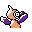

#159
Porygonz
NormalElectric
Base stats Total 460
HP85
Attack80
Defense70
Speed90
Special135
Details
- Catch rate
- 30
- Base exp
- 185
- Growth
- Medium Fast
Level-up moves
LevelMoveType
StartTackleNormal
StartPsybeamPsychic
StartAgilityPsychic
StartTri AttackNormal
Lv 9Thunder WaveElectric
Lv 16PsybeamPsychic
Lv 24RecoverNormal
Lv 32Tri AttackNormal
Lv 36ThunderboltElectric
Lv 40AgilityPsychic
Lv 44ThunderElectric
Lv 48PsychicPsychic
Lv 50Hyper BeamNormal
Evolution
Evolves from Porygon2
Where to find
Not found in the wild — evolve, trade or catch it elsewhere.
TM / HM
TM06 ToxicTM07 Shadow BallTM09 Take DownTM10 Double-EdgeTM13 Ice BeamTM14 BlizzardTM15 Hyper BeamTM22 SolarbeamTM24 ThunderboltTM25 ThunderTM29 PsychicTM32 Double TeamTM39 SwiftTM42 Dream EaterTM44 RestTM45 Thunder WaveTM49 Tri AttackTM50 SubstituteHM05 Flash